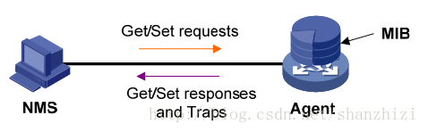

（1）管理信息库MIB：任何一个被管理的资源都表示成一个对象，称为被管理的对象。MIB是被管理对象的集合。它定义了被管理对象的一系列属性：对象的名称、对象的访问权限和对象的数据类型等。每个SNMP设备（Agent）都有自己的MIB。MIB也可以看作是NMS（网管系统）和Agent之间的沟通桥梁。它们之间的关系如图1所示。

图1 NMS Agent和MIB的关系
MIB文件中的变量使用的名字取自ISO和ITU管理的对象标识符（object identifier）名字空间。它是一种分级树的结构。如图2所示，第一级有三个节点：ccitt、iso、iso-ccitt。低级的对象ID分别由相关组织分配。一个特定对象的标识符可通过由根到该对象的路径获得。一般网络设备取iso节点下的对象内容。如名字空间ip结点下一个名字为ipInReceives的MIB变量被指派数字值3，因而该变量的名字为：
iso.org.dod.internet.mgmt.mib.ip.ipInReceives
相应的数字表示（对象标识符OID，唯一标识一个MIB对象）为：
1.3.6.1.2.1.4.3

图2 MIB树结构
当网络管理协议在报文中使用MIB变量时，每个变量名后还要加一个后缀，以作为该变量的一个实例。如ipInReceives的实例数字表示为：1.3.6.1.2.1.4.3.0.
需要注意的是，MIB中的管理对象的OID有些需要动态确定，如IP路由表，为了指明地址202.120.86.71的下一站路由(next hop)，我们可以引用这样的实例：
iso.org.dod.internet.mgmt.mib.ip. ipRouteTable.ipRouteEntry.ipRouteNextHop.202.120.86.71, 相应的数字表示为：1.3.6.1.2.1.4.21.1.7.202.120.86.71
对于这种动态对象标识的实例，由于无法转换为预先指定的Readkey名称，与飞邻的产品架构冲突（需要动态生成可变Readkey），暂不考虑支持。
（2）管理信息结构（SMI）
SMI定义了SNMP框架所用信息的组织、组成和标识，它还为描述MIB对象和描述协议怎样交换信息奠定了基础。
SMI定义的数据类型：
◆ 简单类型（simple）
Integer：整型是-2,147,483,648~2,147,483,647的有符号整数
octet string: 字符串是0~65535个字节的有序序列
OBJECT IDENTIFIER: 来自按照ASN.1规则分配的对象标识符集
◆ 简单结构类型（simple-constructed）
SEQUENCE 用于列表。这一数据类型与大多数程序设计语言中的“structure”类似。一个SEQUENCE包括0个或更多元素，每一个元素又是另一个ASN.1数据类型
SEQUENCE OF type 用于表格。这一数据类型与大多数程序设计语言中的“array”类似。一个表格包括0个或更多元素，每一个元素又是另一个ASN.1数据类型。
◆ 应用类型（application-wide）
IpAddress: 以网络序表示的IP地址。因为它是一个32位的值，所以定义为4个字节；
counter：计数器是一个非负的整数，它递增至最大值，而后回零。在SNMPv1中定义的计数器是32位的，即最大值为4，294，967，295；
Gauge ：也是一个非负整数，它可以递增或递减，但达到最大值时保持在最大值，最大值为232-1；
time ticks：是一个时间单位，表示以0.01秒为单位计算的时间；
SNMP报文
SNMP报文结构如下：（编码之前）
版本号 |
团体名 |
协议数据单元PDU |
SNMP共有5种报文，所以其PDU也有5中，第七点会详细介绍SNMP的5种协议数据单元。
1 SNMP的5种协议数据单元
SNMP规定了5种协议数据单元PDU（也就是SNMP报文），用来在管理进程和代理之间的交换。
get-request操作：从代理进程处提取一个或多个参数值。
get-next-request操作：从代理进程处提取紧跟当前参数值的下一个参数值。
set-request操作：设置代理进程的一个或多个参数值。
get-response操作：返回的一个或多个参数值。这个操作是由代理进程发出的，它是前面三种操作的响应操作。trap操作：代理进程主动发出的报文，通知管理进程有某些事情发生。
前面的3种操作是由管理进程向代理进程发出的，后面的2个操作是代理进程发给管理进程的，为了简化起见，前面3个操作今后叫做get、get-next和set操作。图1描述了SNMP的这5种报文操作。请注意，在代理进程端是用熟知端口161俩接收get或set报文，而在管理进程端是用熟知端口162来接收trap报文。

图1 SNMP的5种报文操作
图2是封装成UDP数据报的5种操作的SNMP报文格式。可见一个SNMP报文共有三个部分组成，即公共SNMP首部、get/set首部、trap首部、变量绑定。

（1）公共SNMP首部
共三个字段：
版本
写入版本字段的是版本号减1，对于SNMP（即SNMPV1）则应写入0。
共同体（community）
共同体就是一个字符串，作为管理进程和代理进程之间的明文口令，常用的是6个字符“public”。
PDU类型
根据PDU的类型，填入0～4中的一个数字，其对应关系如表2所示意图。
表2 PDU类型
（2）get/set首部
请求标识符(request ID)
这是由管理进程设置的一个整数值。代理进程在发送get-response报文时也要返回此请求标识符。管理进程可同时向许多代理发出get报文，这些报文都使用UDP传送，先发送的有可能后到达。设置了请求标识符可使管理进程能够识别返回的响应报文对于哪一个请求报文
差错状态（error status）
由代理进程回答时填入0～5中的一个数字，见表3的描述
表3 差错状态描述
差错状态 | 名字 | 说明 |
0 | noError | 一切正常 |
1 | tooBig | 代理无法将回答装入到一个SNMP报文之中 |
2 | noSuchName | 操作指明了一个不存在的变量 |
3 | badValue | 一个set操作指明了一个无效值或无效语法 |
4 | readOnly | 管理进程试图修改一个只读变量 |
5 | genErr | 某些其他的差错 |
差错索引(error index)
当出现noSuchName、badValue或readOnly的差错时，由代理进程在回答时设置的一个整数，它指明有差错的变量在变量列表中的偏移。
（3）trap首部
企业（enterprise）
填入trap报文的网络设备的对象标识符。此对象标识符肯定是在图3的对象命名树上的enterprise结点{1.3.6.1.4.1}下面的一棵子树上。
trap类型
此字段正式的名称是generic-trap，共分为表4中的7种。
trap类型 | 名字 | 说明 |
0 | coldStart | 代理进行了初始化 |
1 | warmStart | 代理进行了重新初始化 |
2 | linkDown | 一个接口从工作状态变为故障状态 |
3 | linkUp | 一个接口从故障状态变为工作状态 |
4 | authenticationFailure | 从SNMP管理进程接收到具有一个无效共同体的报文 |
5 | egpNeighborLoss | 一个EGP相邻路由器变为故障状态 |
6 | enterpriseSpecific | 代理自定义的事件，需要用后面的“特定代码”来指明 |
当使用上述类型2、3、5时，在报文后面变量部分的第一个变量应标识响应的接口。
特定代码(specific-code)
指明代理自定义的时间（若trap类型为6），否则为0。
时间戳(timestamp)
指明自代理进程初始化到trap报告的事件发生所经历的时间，单位为10ms。例如时间戳为1908表明在代理初始化后1908ms发生了该时间。
（4）变量绑定(variable-bindings)
指明一个或多个变量的名和对应的值。在get或get-next报文中，变量的值应忽略。
管理变量的表示
管理变量表示管理对象类型在某一时刻的值（或称该类型的实例），SNMP以管理变量作为操作对象。
管理变量的表示方法是这样规定的：形如x.y，其中x是管理对象的object identifer。y是能唯一确定对象类型值的一组数字，在非表型变量中为0，在表型变量中是这个表的索引，比如接口表中的接口号，或路由表中的目的网络地址等等 。如：在MIB文件里定义了ipAdEntNetMask这一管理对象，其object identifier为1.3.6.1.1.5.6.1.3它是个路由表中的一项，它的一个实例就是路由表中某一行的子网掩码，如果这行的索引、目的网络地址为129.102.1.0。则这个变量名是：1.3.6.1.1.5.6.1.3.129.102.1.0。在以后的说明中，为了方便，把唯一确定管理变量的一组数字，也就是x.y中的y称作实例。
SNMP的运行过程
驻留在被管设备上的AGENT从UDP端口161接受来自网管站的串行化报文，经解码、团体名验证、分析得到管理变量在MIB树中对应的节点，从相应的模块中得到管理变量的值，再形成响应报文，编码发送回网管站。网管站得到响应报文后，再经同样的处理，最终显示结果。
下面根据RFC1157详细介绍Agent接受到报文后采取的动作：
首先解码生成用内部数据结构表示的报文，解码依据ASN.1的基本编码规则，如果在此过程中出现错误导致解码失败则丢弃该报文，不做进一步处理。
第二步：将报文中的版本号取出，如果与本Agent支持的SNMP版本不一致，则丢弃该报文，不做进一步处理。当前北研的数据通信产品只支持SNMP版本1。
第三步：将报文中的团体名取出，此团体名由发出请求的网管站填写。如与本设备认可的团体名不符，则丢弃该报文，不做进一步处理，同时产生一个陷阱报文。SNMPv1只提供了较弱的安全措施，在版本3中这一功能将大大加强。
第四步：从通过验证的ASN.1对象中提出协议数据单元PDU，如果失败，丢弃报文，不做进一不处理。否则处理PDU，结果将产生一个报文，该报文的发送目的地址应同收到报文的源地址一致。
根据不同的PDU，SNMP协议实体将做不同的处理：
1.1 GetRequest PDU
第一种情况：如果PDU中的变量名在本地维护的MIB树中不存在,则接受到这个PDU的协议实体将向发出者发送一个GetResponse报文，其中的PDU与源PDU只有一点不同：将ERROR-STATUS置为noSuchName,并在ERROR-INDEX中指出产生该变量在变量LIST中的位置。
第二种情况：如果本地协议实体将产生的响应报文的长度大于本地长度限制，将向该PDU的发出者发送一个GetResponse报文，该PDU除了ERROR-STATUS置为tooBig，ERROR-INDEX置为0以外，与源PDU相同。
第三种情况：如果本地协议实体因为其他原因不能产生正确的响应报文，将向该PDU的发出者发送一个GetResponse报文，该PDU除了ERROR-STATUS置为genErr，ERROR-INDEX置为出错变量在变量LIST中的位置，其余与源PDU相同。
第四中情况：如果上面的情况都没有发生，则本地协议实体向该PDU的发出者发送一个GetResponse报文，该PDU中将包含变量名和相应值的对偶表，ERROR-STATUS为noError,ERROR-INDEX为0，request-id域的值应与收到PDU的request-id相同。
1.2 GetNextRequest PDU
GetNextRequest PDU的最重要的功能是表的遍历，这种操作受到了前面所说的管理变量的表示方法的支持，从而可以访问一组相关的变量，就好象他们在一个表内。
下面通过一个例子解释表遍历的过程：
被管设备维护如下路由表：
Destination NextHop Metric
10.0.0.99 89.1.1.42 5
9.1.2.3 99.0.0.3 3
10.0.0.51 89.1.1.42 5
假设网管站欲取得这张路由表的信息，该表的索引是目的网络地址。
网管站向被管设备发送一个GetNextRequest PDU,其中的受管对象的标识如下
GetNextRequest ( ipRouteDest, ipRouteNextHop, ipRouteMetric1 )
SNMP agent响应如下GetResponse PDU:
GetResponse (( ipRouteDest.9.1.2.3 = "9.1.2.3" ),
( ipRouteNextHop.9.1.2.3 = "99.0.0.3" ),
( ipRouteMetric1.9.1.2.3 = 3 ))
网管站继续：
GetNextRequest ( ipRouteDest.9.1.2.3,
ipRouteNextHop.9.1.2.3,
ipRouteMetric1.9.1.2.3 )
agent响应：
GetResponse (( ipRouteDest.10.0.0.51 = "10.0.0.51" ),
( ipRouteNextHop.10.0.0.51 = "89.1.1.42" ),
( ipRouteMetric1.10.0.0.51 = 5 ))
值得注意的是agent必须能够确定下一个管理变量名，以保证所有变量能被取到且只被取到一次。
网管站继续：
GetNextRequest ( ipRouteDest.10.0.0.51,
ipRouteNextHop.10.0.0.51,
ipRouteMetric1.10.0.0.51 )
agent 响应：
GetResponse (( ipRouteDest.10.0.0.99 = "10.0.0.99" ),
( ipRouteNextHop.10.0.0.99 = "89.1.1.42" ),
( ipRouteMetric1.10.0.0.99 = 5 ))
网管站继续
GetNextRequest ( ipRouteDest.10.0.0.99,
ipRouteNextHop.10.0.0.99,
ipRouteMetric1.10.0.0.99 )
这时因为路由表中所有的行都被取遍，agent因返回路由表对象的下一字典后继即该管理对象在MIB树中的后序遍历的直接后继。这里应是nettoMediaIndex，管理对象的OBJECT IDENTIFIER。这个响应通知网管站对表的遍历已经完成。
1.3 GetResponse PDU
GetResponse PDU只有当受到getRequest GetNextRequest SetRequest才由协议实体产生，网管站收到这个PDU后，应显示其结果。
1.4 SetRequest PDU
SetRequest PDU除了PDU类型标识以外，和GetRequest相同，当需要对被管变量进行写操作时，网管站侧的协议实体将生成该PDU。
对SetRequest的响应将根据下面情况分别处理：
如果是关于一个只读变量的设置请求，则收到该PDU的协议实体产生一个GetReponse报文，并置error status为noSuchName, error index的值是错误变量在变量list中的位置。
如果被管设备上的协议实体收到的PDU中的变量对偶中的值，类型、长度不符和要求，则收到该PDU的协议实体产生一个GetReponse报文，并置error status为badValue, error index的值是错误变量在变量list中的位置。
如果需要产生的GetReponse报文长度超过了本地限制，则收到该PDU的协议实体产生一个GetReponse报文，并置error status为tooBig, error index的值是0。
如果是其他原因导致SET失败，则收到该PDU的协议实体产生一个GetReponse报文，并置error status为genErr, error index的值是错误变量在变量list中的位置。
如果不符合上面任何情况，则agent将把管理变量设置收到的PDU中的相应值，这往往可以改变被管设备的运行状态。同时产生一个GetResponse PDU，其中error status置为noError,error index的值为0。
1.5 Trap PDU
Trap PDU的有如下的形式
产生trap的系统的OBJECT IDENTIFIER |
系统的IP地址 |
普通类型 |
特定类型 |
时戳 |
变量对偶表 |
Trap是被管设备遇到紧急情况时主动向网管站发送的消息。网管站收到trap PDU后要将起变量对偶表中的内容显示出来。一些常用的trap类型有冷、热启动，链路状态发生变化等。